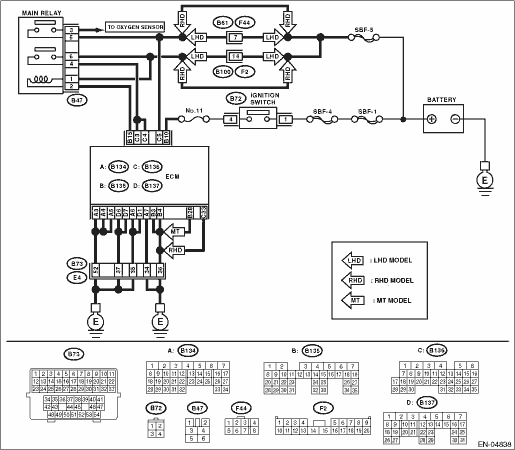

DTC DETECTING CONDITION:
Immediately at fault recognition
CAUTION:
After repairing or replacing the defective part, perform the Clear Memory Mode  and Inspection Mode .
and Inspection Mode .
WIRING DIAGRAM:


| STEP | CHECK | YES | NO |
|
Is the voltage 10 V or more? |
Repair the poor contact of ECM connector. |
|
|
|
Is the resistance less than 10 Ω? |
Repair the ground short circuit of harness between ECM connector and battery. |
|
|
|
Is the fuse blown out? |
Replace the fuse. |
Repair the harness and connector. NOTE: In this case, repair the following item: • Open circuit of harness between ECM and battery • Poor contact in ECM connector • Poor contact in battery terminal |